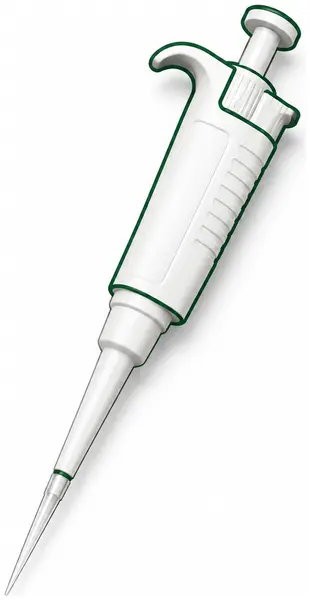
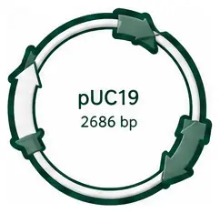
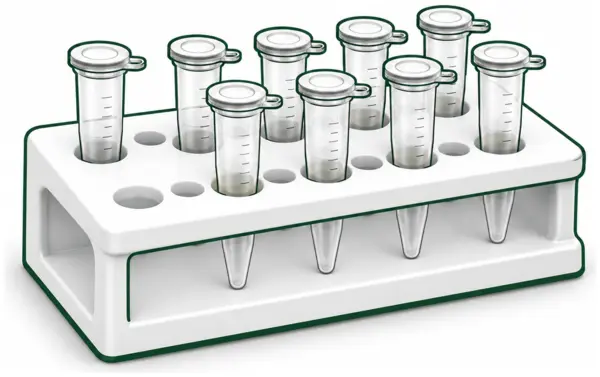
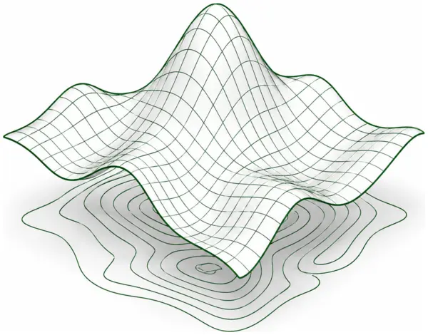
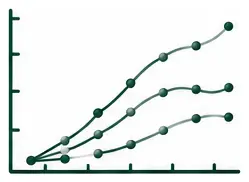
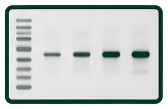
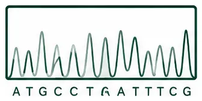
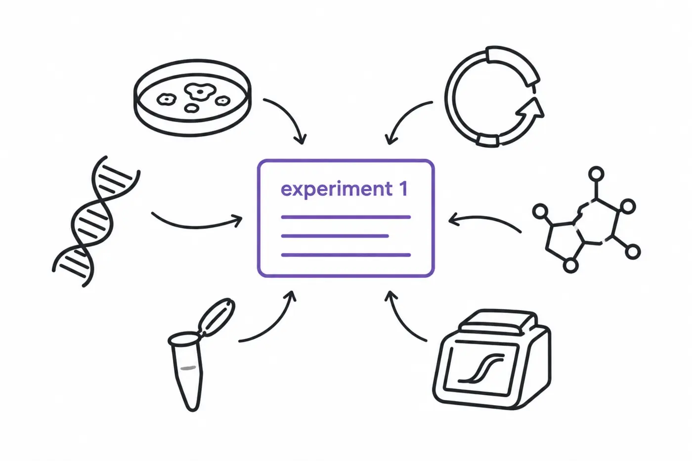
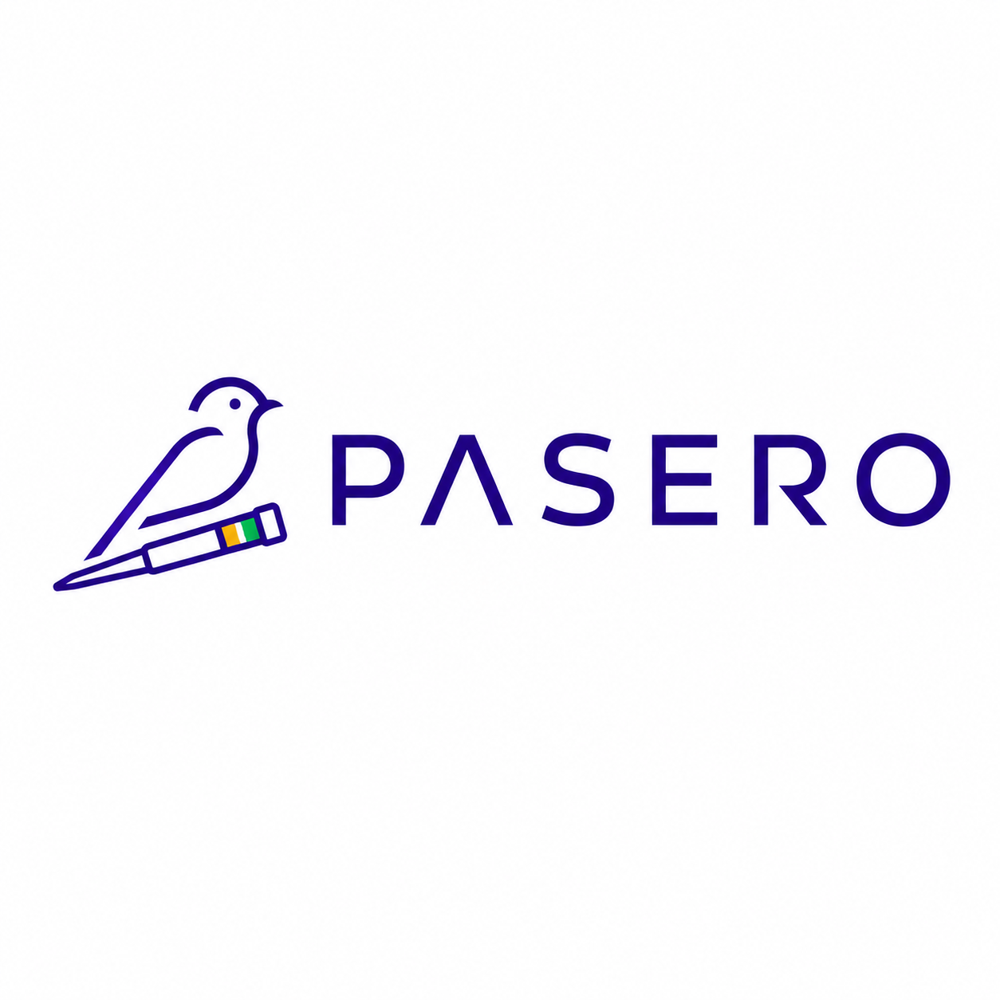

A local-first molecular biology workspace本地优先的分子生物学工作空间ローカルファーストの分子生物学ワークスペース
what is Pasero
Research begins with questions.问起于心研究は「なぜ？」から始まります。
Curiosity can start anywhere in life science.复杂研究，往往始于一个简单的好奇：花儿为什么这样红？小さな疑問が、研究の始まりです。
Questions, switching from tools to tools假器以求其真さまざまなツールで答えを探します。
Notes, data analysis and molecular biology tools move the work forward.我们借助不同的工具，观察、分析、验证，逐步逼近答案。観察し、分析し、確かめます。







Questions, becoming materials and methods由问而成其法材料や方法が増えていきます。
Questions enter the experiment and unfold into materials, methods and records.问题进入实验，也由此展开为材料、方法与一次次记录。細胞、試薬、プラスミド、実験方法。

Finally, we answer our questions终得其解結果をまとめて伝えます。
Finally, we organize our data and results into charts and slides to share.最终我们把数据和结果整理成图表和幻灯片展示出来。データを図やスライドにします。
Answers your questions in Pasero雀角，应问而生雀角は、「なぜ？」から生まれました。
Pasero brings notes, resources, data analysis, molecular biology tools and results together in one place.而雀角将笔记、资源、数据分析、分子生物学工具与结果呈现汇于一处。研究に必要なものを、ひとつに。
AI with selected note contextAI 调用选定笔记上下文選択ノートの文脈を利用するAI
—
—
—
✓
✓
A few things worth knowing关于免费额度与数据無料枠とデータについて
Mobile Free includes three lifetime-created Cell Track tasks—not three passages. Each existing task can continue recording passages, thawing and freezing, even after the free creation allowance is used.Mobile Free 累计可创建 3 个 Cell Track 培养任务，并非只能操作 3 次。额度用完后，已有任务仍可继续记录复苏、传代和冻存。Mobile Freeでは累計3件のCell Trackタスクを作成できます。継代などの操作が3回に制限されるわけではなく、既存タスクには引き続き記録できます。
Your existing research records remain readable and exportable after Pro expires. Local-network sync is manual, not cloud sync. AI model API charges are separate when using your own key.Pro 到期后，已有科研数据仍可查看和导出。当前同步为局域网手动同步，而非云同步。自备 AI API Key 的第三方模型费用另计。Pro終了後も既存の研究記録は閲覧・エクスポートできます。同期はクラウドではなくLAN手動同期です。AIのAPI料金は別途発生します。
Plans shown are proposed pricing; purchasing is not yet enabled on this page.本页为计划中的套餐展示，尚未开放在线购买。表示価格は予定プランです。このページからの購入はまだできません。

What is Pasero
Most researchers use only a small part of Excel, Word, GraphPad Prism, and specialized molecular biology software—but still pay for the whole package and keep moving between apps
Pasero brings the tools you actually use into one lightweight workspace
Pasero means “sparrow” in Esperanto. Its Chinese name, 雀角, comes from The Book of Songs—and sounds like 缺觉, sleep-deprived
I’m Hong Yang—born and raised in Zunyi, Guizhou, and chronically short on sleep. I’m currently doing my best to overcome sleep deprivation and finish my PhD
I built Pasero to reduce the time we spend switching between apps—and save a little more time for sleep. After all, we Guizhou people come from green mountains and clear waters. Beautiful places raise beautiful people, and beautiful people need their sleep
If you are sleep-deprived too, welcome to Pasero / 雀角